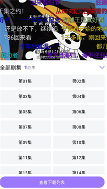
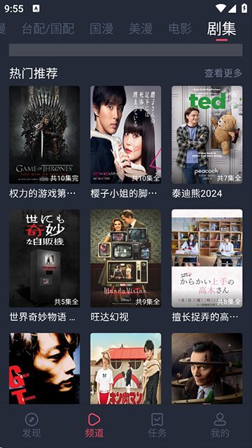

heibai 冷门功能挖掘：你以为它只是个播放器？
用了大半年才敢说摸透 heibai——翻遍设置发现四个藏得很深的冷门选项，从弹幕过滤到批量下载，每一个都在你意想不到的地方提效。
你以为 heibai 就是个换源找片的播放器？能切线路、调画质、开弹幕，差不多就这样了——反正我刚开始用的时候也是这么想的。直到某天追新番追到凌晨，剧荒之余翻设置翻到凌晨三点，才发现它藏了一堆官方都不怎么宣传的冷门选项。
说几个我实际用下来真的好用的，不是那种"有但鸡肋"的花架子。
弹幕过滤的隐藏维度：别只拉密度条
大多数人打开弹幕之后，唯一调过的就是那个密度滑条——往左拉变稀、往右拉变密，完事。但我敢说十个人里有九个没点过"过滤规则"这四个字。
进去之后你会看到至少四个选项：关键词屏蔽、颜色过滤、发送频率过滤、低级弹幕一键开关。关键词屏蔽大家多少知道一点，我重点说后面三个——这才是真冷门。
颜色过滤专治广告弹幕。很多推广的喜欢用大红色或紫色加粗刷存在感，你直接在颜色过滤里勾掉这两种颜色，整个屏幕瞬间干净。我追一部番的时候广告全是红色，勾完之后体验直接上了一个台阶，而且正常的彩色弹幕不会被误伤。
发送频率过滤是刷屏党的克星。设置里可以指定"每秒最多显示 N 条来自同一发送者的弹幕"——我设的是 2 条，那种一秒连发十几条"好看好看好看"的刷屏党直接哑火。最妙的是还有个"屏蔽连续相同内容的重复弹幕"开关，复制粘贴刷屏的也一起干掉。
低级弹幕过滤一键开关，自动屏蔽纯表情、纯符号、过长刷屏。不用自己一个个加关键词，开了就完事。
入口就在播放器设置 → 弹幕 → 过滤规则，加完立刻生效不用重启。密度条管"多少"，这几个过滤管"什么"，两个配合用才是完整的弹幕体验。
批量下载：别再一集一集点了
对了，还没装 heibai 的话，安装包从官方下载拿就行。装完之后我之前也是每看完一集，点一下下载按钮，然后退出详情页，下一集继续点。直到某天下拉详情页想刷评论，不小心看到一个"选择"按钮。
点进去之后是整季的章节列表，可以勾选任意集数，或者按范围选——比如我只想缓存第 3 到第 8 集，直接拖范围就行，不用一个个点。还有个更绝的：下载的时候可以单独选线路。
你没看错——在线播放有线路切换，离线缓存也有多线路。默认是用当前播放的那条，但你可以在下载时挑一条专门用来缓存的线路。我家宽带晚高峰在线播放经常卡，但有一条线路下载速度特别快，我就固定用那条下载，在线播放卡的时候切线路，两条不冲突。
批量下载前 heibai 会提示预计占用空间，移动网络下还会弹提醒。别看这个提醒不起眼——我朋友在地铁上无聊，顺手批量点了二十集，4G 直接跑了好几个 G，差点超额。

所有缓存任务统一在"我的 → 离线缓存"里管，进行中和已完成分开展示，可以暂停、继续、删除。
应用内屏幕方向锁定：比系统锁好用十倍
你肯定用过系统通知栏那个"竖屏锁定"按钮——但有没有遇到过这种情况：你想让 heibai 看视频时固定横屏，但系统锁死横屏之后，微信、备忘录这些本来该竖屏的应用也被迫横着显示了？
heibai 自己就带了方向锁定，藏在播放器设置或通用设置里（不同版本位置略有不同）。打开之后只有 heibai 会强制横屏或竖屏，其他应用不受影响。我晚上躺床上看番就是这么用的：heibai 固定横屏，转个身想刷下微信，自动切回竖屏，完全不用反复开关系统级锁定。
视频和漫画还不太一样——视频横屏体验通常更好（宽屏比例下画面填满），漫画竖屏最舒服，但横屏看分镜密集的作品也有奇效。heibai 会按比例自适应，切换时进度条和弹幕位置都不丢，不会黑屏重启。
卡顿排查：别第一时间怪网络
播放卡了怎么办？大多数人的直觉是：切线路、降画质、查 Wi-Fi 信号。这些都对，但有一个反常识的可能性你可能从来没想过——会不会是 heibai 自己在后台下载东西？
我有一次追番，切了 5 条线路全卡，降画质也卡，最后走到"设置 → 存储管理 → 清理临时缓存"这一步，才发现 heibai 后台挂着十几个下载任务在跑，把带宽吃光了。暂停下载的瞬间，在线播放立刻流畅了。
所以下次卡到想砸手机之前，先看一眼"离线缓存"里有没有正在下载的任务——这是样本文档里提到的、我自己踩过坑的一个隐藏排查项，官方都没怎么强调。
具体的排查顺序和每种卡顿类型的对应处理，heibai文档里也有更系统的整理。真要排查的话，顺序也别乱：先切线路（90% 的卡顿靠这步解决），再降画质，再查网络（信号强度、带宽占用），清理临时缓存，最后才是重启应用或手机。

一个小提醒
弹幕过滤的关键词屏蔽别加太多——我加了二十多个之后，正常弹幕里偶尔也会出现误伤的情况。把"剧透""加群""网址"这几个高频的先加上就行，剩下的遇到了再补。过犹不及，弹幕还是要有点东西才叫热闹。
还有那个低级弹幕过滤开关，如果你本来就很享受表情包弹幕的氛围，开了之后可能会觉得屏幕突然安静了——不是所有"低级"的都应该被屏蔽，这取决于你自己的口味。
把它用透
heibai 不是那种一两年就迭代出一堆新功能的产品，它的魅力在于"藏"——好东西都埋在设置里等着你去翻。密度条、切线路、调画质是基础操作，但真正让体验上一个台阶的，往往是那些没人告诉你、需要自己挖出来的小开关。
我现在的 heibai 设置里：关键词屏蔽了十几个、颜色过滤关了红和紫、发送频率限 2 条、低级弹幕开了、应用内固定横屏、下载永远选那条最快的线路。每一个改动单独看都不大，但叠在一起，追番体验和半年前比完全不是一回事。
这种"翻设置翻到宝"的感觉，大概就是折腾党的快乐吧。相关的功能说明和源码整理我同步到了GitHub、Gitee、GitCode三个仓库，方便不同网络环境下的朋友查阅。